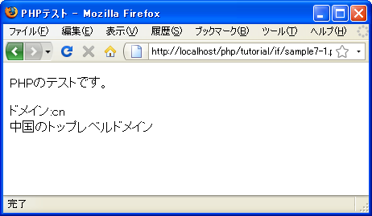

switch文
変数に含まれている値が、東京ならこの処理、大阪ならこの処理、福岡ならこの処理、など色々な値と順次比較して一致する場合毎に処理を記述する場合があります。if文を使うと次のように記述できます。
$pref = '神奈川';
if ($pref == '東京'){
// 処理
}elseif ($pref == '大阪'){
// 処理
}elseif ($pref == '京都'){
// 処理
}elseif ($pref == '福岡'){
// 処理
}elseif ($pref == '千葉'){
// 処理
}
これはこれで間違いではありますが、このような用途の場合にはswitch文を使うと便利です。switch文の書式は次の通りです。
switch (式){
case 値1:
式が値1と等しい時の処理1;
式が値1と等しい時の処理2;
break;
case 値2:
式が値2と等しい時の処理1;
式が値2と等しい時の処理2;
break;
case 値3:
式が値3と等しい時の処理;
break;
default:
式がいずれの値にも等しくない時の処理;
}
switch文では式の値を評価し、caseの後に記述された値と順次比較していきます。もし一致する値があった場合にはその後に記述された処理を順次処理していきbreakに達したら終了します。
if文の場合にはブロックを使ってどこからどこまでの処理を実行するのかが分かるようになっていましたが、switch文ではcase毎にブロックは使用されずbreakに達するまで順次処理を実行していきます。
defaultの後の処理は、式がcaseの後に記述されたいずれの値にも一致しなかった時に実行される処理を記述します。defaultは必要無ければ記述しなくても構いません。
実際には次のように記述します。
$pref = '神奈川';
switch ($pref){
case '東京':
// 処理
break;
case '大阪':
// 処理
break;
case '京都':
// 処理
break;
case '神奈川':
// 処理
break;
default:
// 処理
}
switch文はif文を使って記述することができますが、いくつかの値と順次一致しているかどうかを比較していく場合にはswitch文を使った方が簡潔に記述できる場合があります。
複数の値に一致した場合に同じ処理を行う
switch文はcaseの後に記述された1つ1つの値と順に一致するかどうかを確認していきます。複数の値に一致した場合に同じ処理を行わせる場合には次のように記述します。
$pref = '神奈川';
switch ($pref){
case '東京':
print '関東です';
break;
case '千葉':
print '関東です';
break;
case '神奈川':
print '関東です';
break;
case '大阪':
print '関西です';
break;
}
swtich文ではcaseの後に書かれた値に一致した場合、それ以降の処理をbreakに達するまで順に処理を実行していきます。そこでbreakを故意に省略すると他のcaseの後に記述された処理も引き続き実行されていきます。
次の例を見て下さい。
$pref = '神奈川';
switch ($pref){
case '東京':
print '東京です';
case '千葉':
print '千葉です';
break;
case '神奈川':
print '神奈川です';
break;
case '大阪':
print '大阪です';
break;
}
この場合、「東京」に一致した場合はまず「print '東京です';」が実行されます。breakがないため本来「千葉」に一致した場合に実行される「print '千葉です';」も続いて実行されます。そしてbreakが見つかりますのでswitch文を終了します。
このようにswitch文はブロックで実行されるの処理をまとめているのではなくbreakが見つかるまで順に処理を実行していくという特性を利用して、複数の値に一致した場合に同じ処理を実行させる記述が行えます。よって最初の例は次のように記述できます。
$pref = '神奈川';
switch ($pref){
case '東京':
case '千葉':
case '神奈川':
print '関東です';
break;
case '大阪':
print '関西です';
break;
}
この場合は変数「pref」の値が「東京」「千葉」「神奈川」のいずれに一致した場合でも「print '関東です';」を実行します。
ただしswitch文で発生しやすいミスは「break」の記述を忘れて余分な処理が実行されてしまうことです。「break」をわざと省略して今回のようなプログラムを記述すると、「break」をわざと省略したのか間違えて省略したのか分かりにくくなりますので注意して下さい。
サンプルプログラム
では簡単なプログラムで試して見ます。
<!DOCTYPE html PUBLIC "-//W3C//DTD XHTML 1.0 Transitional//EN"
"http://www.w3.org/TR/xhtml1/DTD/xhtml1-transitional.dtd">
<html xmlns="http://www.w3.org/1999/xhtml" xml:lang="ja" lang="ja">
<head>
<meta http-equiv="Content-Type" content="text/html;charset=UTF-8" />
<title>PHPテスト</title>
</head>
<body>
<p>PHPのテストです。</p>
<p>
<?php
$domain = 'cn';
print 'ドメイン:'.$domain.'<br />';
switch ($domain){
case 'in':
print 'インドのトップレベルドメイン';
break;
case 'cn':
print '中国のトップレベルドメイン';
break;
case 'jp':
print '日本のトップレベルドメイン';
break;
default:
print '不明です';
}
?>
</p>
</body>
</html>
上記のファイルをWWWサーバのドキュメントルート以下に設置しブラウザからアクセスすると次のように表示されます。

( Written by Tatsuo Ikura )

著者 / TATSUO IKURA
初心者～中級者の方を対象としたプログラミング方法や開発環境の構築の解説を行うサイトの運営を行っています。